Glossolalia (Section 68)
GLOSSOLALIA
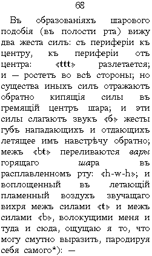
In formations of a sphere-shaped likeness (in the cavity of the mouth) I see two gestures of forces: one from the periphery to the center, the other to the periphery from the center: "ttt" flies apart; and -- it spreads in all directions; but beings of other forces reflect these boiling forces backwards to the roaring center of the sphere; and these forces compose the sound "b" gestures of the lips attacking and surrendering to what is flying to meet them on the return; between "bt" pour over vapors of the burning sphere in the molted mouth: "h-w-h"; in the one incarnated in the flying flaming air of the resounding whirlwind between the forces "t" and the forces "b", dragging me to and fro, I sense that which I am able to express murkily, as I parody myself:*--
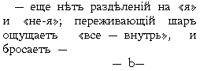
-- there is no separation into "I" and "not-I"; the surviving sphere senses "everything is - inside", and throws --
-- b --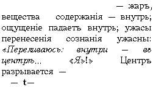
-- the heat, substances of content -- inside; the sensation falls inwards: the horrors of the transfer of consciousness are horrifying: "I pour over: inside -- in the center...."I" The center explodes apart --
-- t --
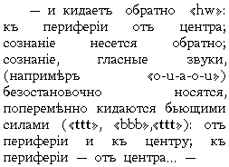
-- and casts backwards "hw": to the periphery from the center consciousness is carried back; consciousness, the vowel letters, (for example "o-u-a-o-u") are carried ceaselessly about, by turns they are tossed by beating forces ("ttt," "bbb", "ttt") from the periphery back to the center; to the periphery -- from the center...--
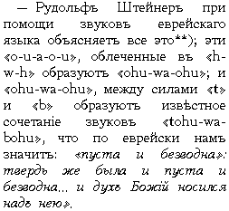
-- Rudolf Steiner with the assistance of sounds of the Hebrew language clarifies all of this;** these "o-u-a-o-u", clothed into "h-w-h" form the image "ohu-wa-ohu"; and "ohu-wa-ohu", between the forces "t" and 'b" form an image of the well known combination of sounds "tohu-wa-bohu" which in Hebrew signifies: "void and without form [water]": the earth was void and without form [water]... And the Spirit of God moved above it."
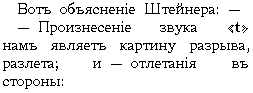
Here is the clarification of Steiner: --
-- Pronunciation of the sound "t" provides us a picture of an explosion, a flying apart; and -- the flying away to the sides:
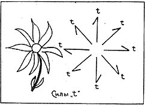
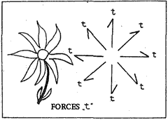
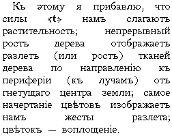
To this I add, that the forces "t" compose for us the plant world; the uninterrupted growth of a tree depicts the flying apart (or growth) of the fabrics of the tree in the direction of the periphery (toward the rays) away from the oppressive center of the earth; the very outline of flowers depicts for use the gestures of this flying apart; a flower is -- an incarnation.
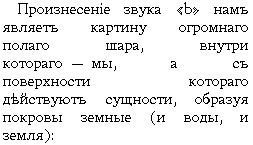
The pronunciation of the sound "b" provides us with a picture of an enormous hollow sphere, inside of which are -- we, and from the surface of which essences act, forming earthly covers (both water, and earth).
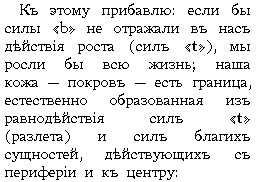
To this I add: if the forces of "b" did not reflect back to us the activity of growth (of the forces "t"), we would grow our whole life; our skin is -- a cover -- a boundary, formed naturally from the equilibrium of forces of "t" (of the flying apart) and of the forces of the good essences, acting from the periphery and toward the center:
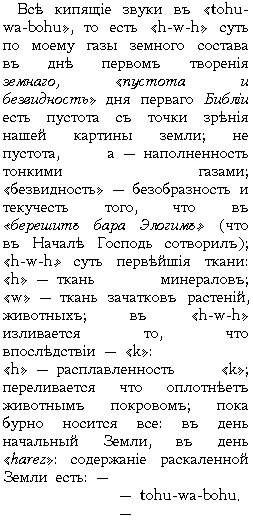
All of the seething sounds in "tohu-wa-bohu," that is "h-w-h" are for me gases of the earthly composition on the first day of creation of the earth, "void and without form" of the first day of the Bible is the void from the point of view of our picture of the earth; not a void, but a -- fullness of delicate gases; "without form" is -- the formlessness and flowing quality of everything, that is in "bereshiit bara Elohim" (that in the Beginning God created); "h-w-h" are the very first fabrics: "h" is -- the fabric of minerals; "w" -- the fabric of the germs of plants, and the animals; in "h-w-h" flows out that which subsequently is -- "k"; "h" is -- molten "k"; it pours over that which condenses as the animal cover; meanwhile everything is carried stormily about: on the day beginning day of the Earth, on the day "ha'arez": the contents of the forged Earth is --
--tohu-wa-bohu --
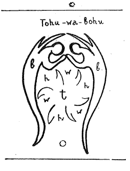
Illus. 13
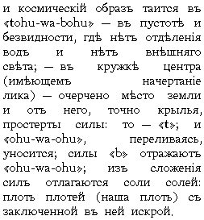
and the cosmic image is kept a mystery in "tohu-wa-bohu" -- in the barrenness and invisibility, where there is no separation of the waters and no external light; -- in the circle of the center (which has the outline of a face) -- is outlined the place of the earth and from it, just like wings, forces are extended: that is -- "t"; and "ohu-wa-ohu," spilling over, is carried way; the forces of "b" depict "ohu-wa-ohu"; from the composition of these forces are composed the salts of salts: flesh of fleshes (our flesh) with the spark locked into it.
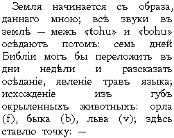
Earth begins with that image, which is given by me; all sounds in the earth -- between "tohu" and "bohu" later subside; the seven days of the Bible can be rearranged into the days of the week and tell the tale of that subsiding, the appearance of the grasses of language: the departure out of the lips of the winged animals: eagle (f), ox (b), lion (v); here I place a period: --
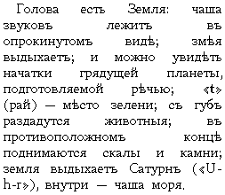
The Head is the Earth; the chalice of sounds lies in a inverted view; the serpent exhales; and you can see the beginnings of the coming planet, being prepared by speech; "t" (paradise) is -- a place of greenery; the animals resound from the lips; at the opposite end cliffs and rocks are raising up; earth exhales Saturn ("U-h-r"); inside is -- the chalice of the sea.
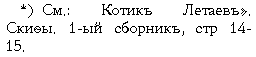
*Cf. Kotik Letaev, Skify, I, pp. 14-15.
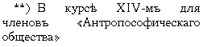
** In Course XIV for members of the "Anthroposophical Society."